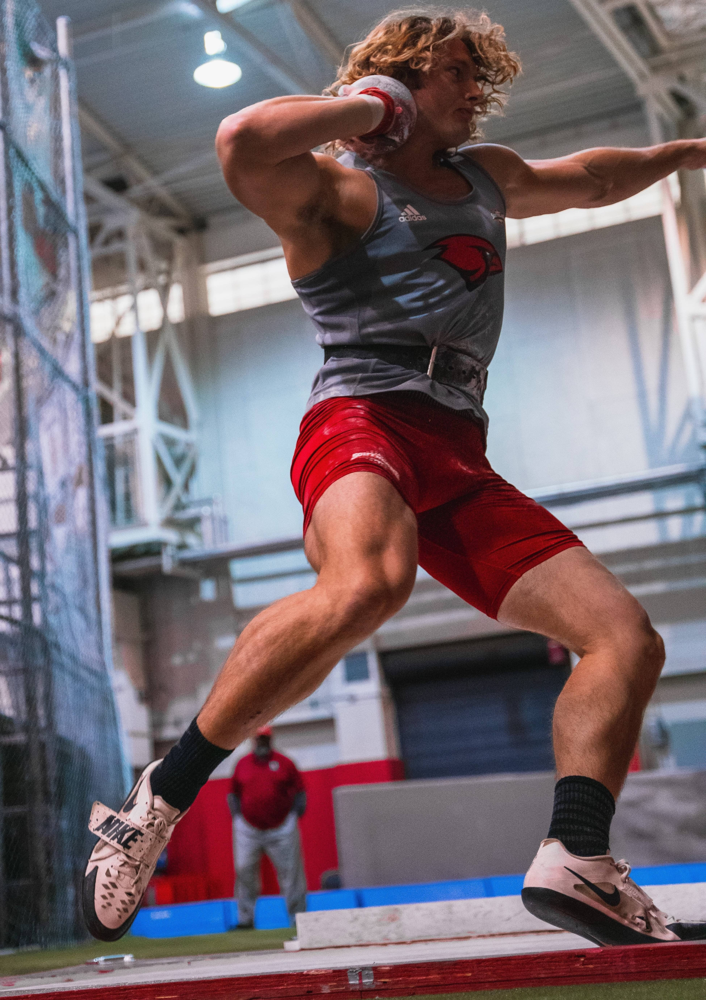

I bring a fierce competitiveness to anything I dabble in.
I'm Garrett Stokes.
Originally from El Paso, TX, I've been in San Antonio for over three years now at UIW living my life and perfecting my crafts, Cybersecurity and Track & Field.
I am striving to have a future life I love and enjoy living and being a person to bring positive change to the world through anything I do. I have been working very hard for this, balancing school, track, and work to make it come true.
I am now almost finished completing my degree courses for my undergraduate degree and plan to pursue a master's degree after graduation and continue competing in track and field for another year. I am currently sitting at a 3.84 GPA.
I have also invested a hefty amount of time in Athletics and have obtained UIW Track Program's school record in Hammer (61.14m), Shotput (17.44m), and Weight Throw (18.62m).
Interested in working with me?
Contact »
